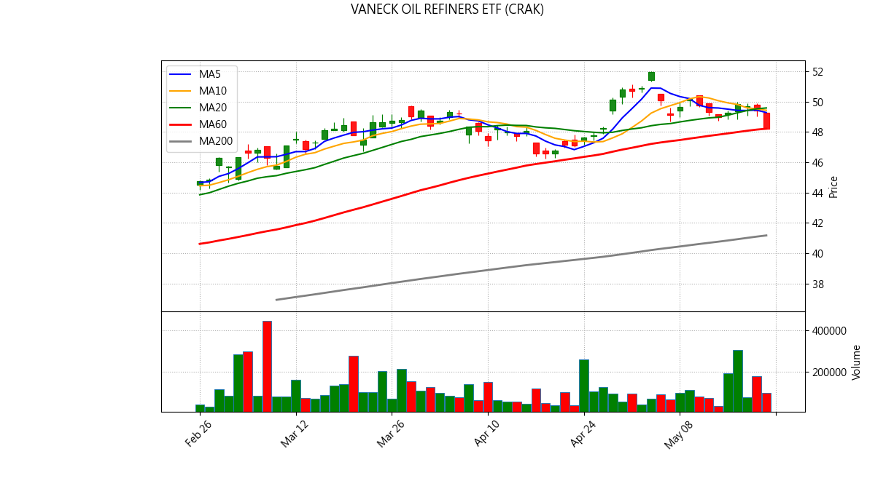

📊 NYSE/US Stock Inventory AI Diagnosis
Generated at: 2026-05-22 19:23:03
ADVANCED MICRO DEVICES (AMD)
Current Price: $449.59
💼 Portfolio Status
Avg Cost: $322.51
Quantity: 8
Unrealized P/L: $1,016.63
Return Rate: 39.40%
📋 Analysis Signals
✅ No major sell signals triggered.

✨ AI Comprehensive Diagnosis
ARISTA NETWORKS INC (ANET)
Current Price: $148.59
💼 Portfolio Status
Avg Cost: $145.10
Quantity: 17
Unrealized P/L: $59.38
Return Rate: 2.41%
📋 Analysis Signals
✅ No major sell signals triggered.

✨ AI Comprehensive Diagnosis
AXT INC (AXTI)
Current Price: $121.02
💼 Portfolio Status
Avg Cost: $109.57
Quantity: 30
Unrealized P/L: $343.38
Return Rate: 10.45%
📋 Analysis Signals
✅ No major sell signals triggered.

✨ AI Comprehensive Diagnosis
VANECK OIL REFINERS ETF (CRAK)
Current Price: $48.20
💼 Portfolio Status
Avg Cost: $49.96
Quantity: 60
Unrealized P/L: $-105.89
Return Rate: -3.53%
📋 Analysis Signals
⚠️ 【Break below 5MA】Short-term weakness.
🚨 【Break below 10MA】Trend broken, consider exit.

✨ AI Comprehensive Diagnosis
FABRINET (FN)
Current Price: $703.27
💼 Portfolio Status
Avg Cost: $684.61
Quantity: 3
Unrealized P/L: $55.99
Return Rate: 2.73%
📋 Analysis Signals
✅ No major sell signals triggered.

✨ AI Comprehensive Diagnosis
ALPHABET INC-CL C (GOOG)
Current Price: $383.47
💼 Portfolio Status
Avg Cost: $329.63
Quantity: 16
Unrealized P/L: $861.38
Return Rate: 16.33%
📋 Analysis Signals
⚠️ 【Break below 5MA】Short-term weakness.
🚨 【Break below 10MA】Trend broken, consider exit.

✨ AI Comprehensive Diagnosis
MARVELL TECHNOLOGY INC (MRVL)
Current Price: $190.69
💼 Portfolio Status
Avg Cost: $125.39
Quantity: 25
Unrealized P/L: $1,632.59
Return Rate: 52.08%
📋 Analysis Signals
✅ No major sell signals triggered.

✨ AI Comprehensive Diagnosis
MICRON TECHNOLOGY INC (MU)
Current Price: $762.10
💼 Portfolio Status
Avg Cost: $597.78
Quantity: 5
Unrealized P/L: $821.61
Return Rate: 27.49%
📋 Analysis Signals
✅ No major sell signals triggered.

✨ AI Comprehensive Diagnosis
NVIDIA CORP (NVDA)
Current Price: $219.51
💼 Portfolio Status
Avg Cost: $182.78
Quantity: 33
Unrealized P/L: $1,212.12
Return Rate: 20.10%
📋 Analysis Signals
⚠️ 【Break below 5MA】Short-term weakness.
🚨 【Break below 10MA】Trend broken, consider exit.

✨ AI Comprehensive Diagnosis
RAMBUS INC (RMBS)
Current Price: $141.82
💼 Portfolio Status
Avg Cost: $132.69
Quantity: 14
Unrealized P/L: $127.86
Return Rate: 6.88%
📋 Analysis Signals
✅ No major sell signals triggered.